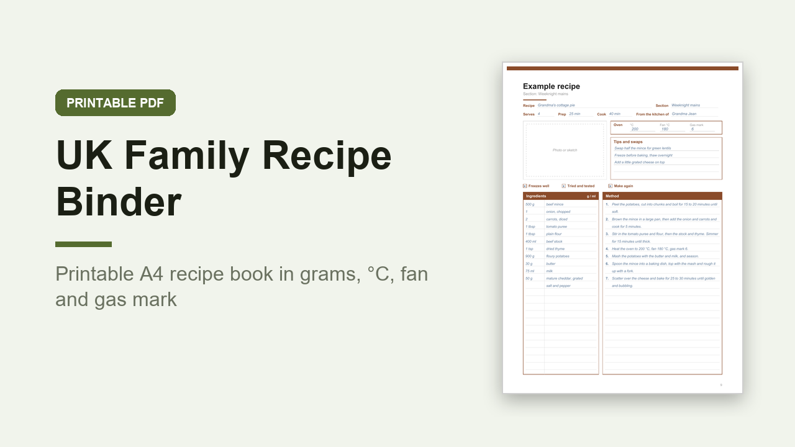

UK Family Recipe Binder, Printable A4 Recipe Book in Grams and Gas Mark
GBP 5.00 · instant digital download

A family recipe binder made for UK kitchens: A4 paper, UK spelling, ingredients in grams and millilitres, and an oven box on every recipe with three slots for °C, fan °C and gas mark.
Most printable recipe binders are American, on Letter paper with cups and Fahrenheit.
This one is not.
What you get: 1 printable A4 PDF, 53 pages, portrait, not editable.
You print it and write on it by hand.
Inside: how to use, a 4 page recipe index for 100 recipes, an oven temperatures page (gas mark 1/4 to 9 with conventional °C, fan °C and °F), a weights and volumes page (ounces to grams, UK and US pints, spoons, and about how much a US cup of flour, sugar, butter, rice and oats weighs), a filled in example recipe, 8 section dividers with a contents list each (breakfasts, soups and starters, weeknight mains, Sunday roasts and sides, puddings, baking, festive and party food, family favourites), 24 recipe sheets in 3 layouts (8 with a photo box, 8 with ingredients on top and step by step method, 8 with two quick recipes per page), 2 weekly meal planners with Monday starts, a shopping list by aisle, a freezer log, 4 family recipe story pages, a Christmas dinner planner, a special occasion menu and 2 notes pages.
Print any page as often as you like.
A thoughtful gift for a new home or a family cook.
Digital download, nothing is posted..
What happens after you buy
Payment and delivery are handled by Gumroad. You get the download straight after paying, and a copy of the link by email. Nothing is posted to you.
Tags: recipe binder, recipe book, recipe template, uk recipe book, printable planner, meal planner, a4 printable, family recipes, recipe cards, kitchen printable